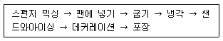

제과기능장 (2005-07-17 기출문제)
1과목: 임의 구분
1. 스펀지 케이크 제조시 제품의 건조 방지를 위해서 전화당 같은 보습제의 사용범위로 가장 알맞은 것은?
- 5 ∼ 10%
- 15 ∼ 25%
- 30 ∼ 50%
- 55 ∼ 100%
(정답률: 50%)

2. 다음 케이크 혼합 방법 중 반죽형 케이크와 거품형 케이크에서 공통적으로 사용될 수 있는 방법은?
- 크림법
- 단단계법
- 블랜딩법
- 공립법
(정답률: 39%)
3. 다음 중 제과용 믹서로 부적합한 것은?
- 핸드믹서
- 에어믹서
- 버티컬믹서
- 스파이럴믹서
(정답률: 58%)
4. 기본적인 데커레이션 아이싱에 포함되지 않는 것은?
- 로얄 아이싱
- 버터크림 아이싱
- 퐁당
- 초콜릿 훠지 아이싱
(정답률: 30%)
5. 설탕 사용량이 90%인 후르츠 케이크 제조시, 풍미 향상을 위하여 당밀을 15% 사용하였을 경우 설탕 사용량으로 알맞은 것은?
- 101%
- 91%
- 81%
- 71%
(정답률: 31%)
6. 아이싱의 끈적거리는 결점을 방지하는 조치로 틀리는 사항은?
- 아이싱의 배합에 최소의 액체를 사용한다.
- 아이싱이 굳으면 중탕의 방법으로 40℃ 전후로 가온하여 사용한다.
- 굳은 아이싱을 가온하는 것만으로 여리게 되지 않으면 소량의 물을 넣고 다시 중탕으로 가온하여 사용한다.
- 젤라틴, 검(gum)류와 같은 안정제를 사용하거나 전분이나 밀가루와 같은 흡수제를 사용한다.
(정답률: 23%)
7. 페이스트리 반죽을 성형하는 동안 반죽이 수축되는 것을 방지하기 위하여 사용하는 방법이 아닌 것은?
- 두 번째 단계보다 처음 단계에서 반죽 늘리기 작업을 많이 해준다.
- 성형전 반죽이 수축하지 않도록 충분한 휴지시간을 준다.
- 반죽에 L-시스테인을 30 ppm 정도 첨가해 준다.
- 반죽을 혼합할 때 충분하게 오버믹스 해 준다.
(정답률: 49%)
8. 도넛 제품이 과도하게 흡유를 하는 문제가 발생되었다. 원인을 점검하는 항목으로 틀리는 것은?
- 도넛 반죽에 수분이 많지 않은가
- 튀김 시간이 길지 않은가
- 믹싱 시간이 길지 않은가
- 튀김 온도가 낮지 않은가
(정답률: 32%)
9. 쿠베르튀르 초콜릿 안에 들어 있는 카카오버터의 융점과 가장 안정된 형태 및 피복이 끝난 후 저장 온도로 알맞는 것은?
- 23∼25℃, 알파(α)형, 15∼18℃
- 23∼25℃, 감마(γ)형, 20∼25℃
- 33∼35℃, 베타(β)형, 15∼18℃
- 33∼35℃, 알파(α)형, 20∼25℃
(정답률: 25%)
10. 반죽형 케이크 제조시 반죽의 되기(수분함량)에 따라 제품의 품질에 큰 영향을 미친다. 반죽의 수분 함량이 정상보다 많은 경우에 반죽의 비중, 부피 및 풍미에 미치는 영향으로 맞는 것은?
- 비중 증가, 부피 감소, 풍미 감소
- 비중 증가, 부피 증가, 풍미 증가
- 비중 감소, 부피 증가, 풍미 증가
- 비중 감소, 부피 감소, 풍미 감소
(정답률: 19%)
11. 설탕과 계란 혼합물의 온도는 스펀지 케이크 체적에 커다란 영향을 미친다. 다음 중 스펀지 케이크의 체적이 가장 클 것으로 예측되는 설탕과 계란 혼합물의 온도는?
- 4-10℃
- 21-24℃
- 30-38℃
- 45-54℃
(정답률: 39%)
12. 시퐁 케이크에 대한 설명으로 틀린 것은?
- 식물성유보다 버터나 경화유가 알맞다.
- 분당보다는 입상형 설탕이 바람직하다.
- 계란흰자의 비중은 0.18-0.25로 맞춘다.
- 계란 노른자 반죽을 머랭에 섞는다.
(정답률: 32%)
13. 스펀지 케이크 제조시 계란 600g을 사용하는 원래 배합을 변경하여 유화제 24g을 사용하고자 한다. 이 때 필요한 계란양은?
- 720g
- 600g
- 576g
- 480g
(정답률: 25%)
14. 케이크 반죽의 팬닝에 대한 설명으로 옳지 않은 것은?
- 엔젤푸드케이크, 시퐁케이크는 팬에 물을 고르게 칠한 후 팬닝한다.
- 분할중량은 유채씨를 이용하여 팬의 부피를 구한 다음 비중으로 나눈다.
- 각 제품은 비중에 따라 비용적이 달라지므로 분할중량을 다르게 한다.
- 비중이 낮은 반죽은 g당 팬을 차지하는 부피가 커진다.
(정답률: 32%)
15. 스펀지 케이크를 굽고 난 후 중앙이 올라온 형태가 되었다. 원인이 아닌 것은?
- 계란양이 적고 설탕양이 많다.
- 오븐온도가 너무 높다.
- 분할중량이 적거나, 팬의 깊이가 낮다.
- 오버믹싱하여 반죽이 되다.
(정답률: 10%)
16. 미국식 영양강화빵은 일반빵에 주로 무엇을 첨가하여 만드는 것인가?
- 라이신 등 필수아미노산이 고루 함유된 단백질
- 비타민 B군과 무기질
- 저콜레스테롤 지방
- 부족한 식이섬유
(정답률: 17%)
17. 냉동빵 제품에서 반죽시 수분의 양을 줄이는 가장 중요한 이유는?
- 반죽시간 감소
- 발효 증가
- 이스트 활동 촉진
- 형태 유지
(정답률: 25%)
18. 포장된 식품의 품질변화 요인에 대한 설명으로 부적당한 것은?
- 우선적으로 식품 자체성분의 변화가 없어야 한다.
- 포장재료의 선택시 각 포장재의 특징을 살펴본 후 선택해야 제품의 특성이 유지된다.
- 일단 포장된 제품의 품질은 저장조건에 따라 영향을 받지 않는다.
- 기구나 용기 포장이 위생상 불량할 때 이것에 식품이 접촉되므로 여러가지 영향을 미치게 된다.
(정답률: 45%)
19. 스트레이트법을 노타임 반죽법으로 변경할 때의 조치사항으로 맞지 않는 것은?
- 물 사용량을 약 2% 줄인다.
- 설탕 사용량을 1% 증가시킨다.
- 이스트 사용량을 0.5∼1% 증가시킨다.
- 산화제를 30∼50 ppm 사용한다.
(정답률: 28%)
20. 언더베이킹(Under Baking)에 대한 설명으로 틀린 항목은?
- 낮은 온도의 오븐에서 구울 때의 대표적인 현상이다.
- 완제품에 많은 수분이 남아있게 된다.
- 제품의 윗면 중앙이 올라오고 가운데가 터지기 쉽다.
- 속이 익지 않아 가라앉는 경우가 있다.
(정답률: 31%)
2과목: 임의 구분
21. 정상적인 생산조건에서 분할기의 최적 분할속도는 분당 몇 회전인가?
- 8∼10 회전
- 12∼16 회전
- 18∼20 회전
- 22∼26 회전
(정답률: 30%)
22. 하스브레드 제조시 재료 사용에 대한 설명으로 잘못된 것은?
- 불란서빵 제조시 팬을 사용하면 정상적인 물을 사용하여도 된다.
- 이스트푸드 중의 산화제는 글루텐을 강하게 하므로 소량 사용한다.
- 비엔나빵이나 이탈리안빵은 설탕, 쇼트닝, 분유, 계란등을 식빵 수준으로 사용한다.
- 맥아는 껍질색 개선, 풍미개선, 부피증가 등에 도움을 준다.
(정답률: 25%)
23. 일반적인 빵을 만들 때 2차 발효실의 습도가 낮았을 경우에 대한 설명으로 틀린 항목은?
- 반죽 표면에서 수분이 증발되어 껍질이 마르기 쉽다.
- 제품 껍질에 수포가 형성되기 쉽다.
- 껍질색이 불균일하게 되기 쉽다.
- 팽창이 저해되어 부피가 작아지기 쉽다.
(정답률: 30%)
24. 반죽을 냉동, 냉장, 해동, 2차발효를 프로그래밍에 의하여 자동적으로 조절하는 기계는?
- 도 컨디셔너(dough conditioner)
- 자동 분할기(automatic divider)
- 라운더(rounder)
- 정형기(moulder)
(정답률: 41%)
25. 동일한 조건에서 발효시간을 달리 했을 때 완제품 식빵 pH가 다음과 같았다면 2차 발효시간이 가장 길었던 것은?
- pH 5.49
- pH 5.40
- pH 5.31
- pH 5.13
(정답률: 23%)
26. 빵 제조시 반죽온도에 대한 설명으로 틀린 것은?
- 반죽기에 따라 마찰열이 서로 달라 마찰계수를 구해야한다.
- 단백질 함량이 많은 밀가루는 반죽시 반죽온도가 높아진다.
- 많이 사용하는 재료가 반죽온도에 영향을 미친다.
- 반죽온도가 높으면 발효가 빨라져 양질의 제품을 만들수 있다.
(정답률: 33%)
27. 옥수수 분말을 첨가하여 제조하는 옥수수식빵의 제조공정으로 적절한 항목은?
- 배합 단계에서 반죽 종료시 반죽온도는 30~32℃가 적당하다.
- 분할량이 식빵에 비해 10∼15% 많으므로 충분한 굽기를 하여 주저앉지 않도록 한다.
- 옥수수가루는 성형 단계에서 내용물로 넣어준다.
- 일반 식빵에 비해 2차 발효시간을 줄인다.
(정답률: 36%)
28. 다음은 제빵에 있어 흡수에 영향을 주는 요인들이다. 서로의 관계 연결이 잘못된 것은?
- 설탕 5% 증가 - 흡수율 1% 감소
- 탈지분유 1% 증가 - 흡수율 0.75% 증가
- 연수사용 - 흡수율 증가
- 반죽온도 5℃ 증가 - 흡수율 3% 감소
(정답률: 36%)
29. 구워진 빵을 급격히 냉각시켰을 때의 발생된 문제점은?
- 빵이 질겨진다.
- 노화가 빠르다.
- 쉽게 변질된다.
- 습기가 남아 있다.
(정답률: 18%)
30. 오븐에서 구워나온 빵의 껍질의 수분 함량으로 가장 적당한 것은?
- 6%
- 12%
- 18%
- 24%
(정답률: 44%)
31. 우유에 관한 설명 중 잘못된 것은?
- 우유의 비중은 1.025 - 1.035 정도이다.
- 우유를 구성하고 있는 단백질 중 가장 많은 것은 카제인이다.
- 우유 구성 성분인 유당은 두 분자의 포도당으로 되어있다.
- 우유는 비타민 A, B2 의 좋은 공급원이다.
(정답률: 27%)
32. 베이킹파우더 10kg 중에 전분이 34%이고, 중화가가 120인 경우 산 작용제의 무게는?
- 1kg
- 3kg
- 5kg
- 8kg
(정답률: 21%)
33. 계란흰자의 기포력을 안정화시키는 것과 가장 관계가 깊은 것은?
- 버터
- 설탕
- 난황
- 우유
(정답률: 41%)
34. 비터 초콜릿의 주요 성분은?
- 버터
- 카카오분말
- 설탕
- 우유
(정답률: 41%)
35. 제과·제빵에 여러 면으로 사용되고 있는 계면활성제에 대한 설명으로 틀린 것은?
- 친수성 그룹과 친유성 그룹을 함께 지니고 있다.
- 친수성 그룹에는 극성기를, 친유성 그룹에는 비극성기를 가지고 있다.
- 친수성-친유성 균형(HLB)이란 계면활성제 분자중의 친수성 부분의 %를 5로 나눈 수치이다.
- 친수성-친유성 균형이 9 이하이면 물에 잘 녹는다.
(정답률: 17%)
36. 육두구과 교목의 열매를 건조시켜 만든 것은?
- 계피
- 바닐라
- 넛맥
- 생강
(정답률: 28%)
37. 이스트에 들어 있는 효소가 아닌 것은?
- 인버타아제(invertase)
- 말타아제(maltase)
- 리파아제(lipase)
- 락타아제(lactase)
(정답률: 28%)
38. 어떤 밀가루의 흡수율이 평상시 보다 감소되었다. 우선적으로 점검해야 할 사항과 가장 거리가 먼 것은?
- 이스트푸드 사용량
- 반죽 시간
- 밀가루의 숙성정도
- 분유 사용량
(정답률: 22%)
39. 물을 연화시키는 방법이 아닌 것은?
- 음이온 교환법
- 증류법
- 여과법
- 석회·소다법
(정답률: 19%)
40. 설탕에 물을 붓고 식초 몇 방울을 넣은 후 끓이면 감미가 높아진 전화당 시럽이 된다. 전화당에 대한 설명 중 틀리는 것은?
- 포도당과 과당이 혼합된 이당류이다.
- 설탕을 분해해서 만들 수 있다.
- 포도당과 과당의 비율은 각각 50%씩이다.
- 물에 전화당이 용해된 제품을 전화당 시럽이라한다.
(정답률: 12%)
3과목: 임의 구분
41. 제빵용 밀가루의 질을 판단하는 간단한 시험으로 침강시험(Sedimentation test)을 할 때 사용하는 산은 어느 것인가?
- 황산
- 염산
- 초산
- 젖산
(정답률: 19%)
42. 안정제의 사용목적은?
- 아이싱의 끈적거림 방지
- 흡수제로 호화지연 효과
- 파이 충전물의 유화제
- 머랭의 수분배출 촉진
(정답률: 21%)
43. 아밀로오스(amylose)에 대한 설명으로 틀린 것은?
- 포도당이 α-1,4 결합으로 연결되어 있다.
- 요오드와 반응하여 특유한 청색반응을 나타낸다.
- 전분에는 아밀로펙틴(amylopectin)보다 아밀로오스(amylose)의 함량이 더 높다.
- 아밀로오스(amylose)의 함량이 많을수록 노화의 속도가 빠르다.
(정답률: 29%)
44. 리큐르의 이름과 원료가 다르게 연결된 것은?
- 큐라소(Curacao) - 오렌지 껍질
- 칼루아(Kahlua) - 커피
- 슬로우진(Sloe gin) - 카카오빈
- 아마렛토(Amaretto) - 살구씨
(정답률: 22%)
45. 거친 설탕 입자를 마쇄한 제품은?
- 과립당
- 커피당
- 빙당
- 분당
(정답률: 42%)
46. 식품의 위생적 취급방법에 대한 설명 중 틀린 것은?
- 생식품은 오염되지 않도록 조리된 식품과 분리하여 냉장고에 저장하여야 한다.
- 냉동된 식품은 영양분의 손실을 줄이기 위하여 가급적 실온에서 서서히 해동시킨다.
- 익히지 않는 육류를 취급한 도마와 칼은 세척 후 반드시 소독한다.
- 전처리 후 바로 조리하지 않을 식재료는 냉장고에 보관하여야 한다.
(정답률: 33%)
47. 수인성 경구 전염병의 특징은?
- 치명율이 자연독 식중독보다 높다.
- 잠복기가 세균성 식중독보다 짧다.
- 2차 감염으로 인한 환자 발생이 세균성 식중독보다 적다.
- 음식물, 손, 식기, 물 등을 통하여 미량의 균으로 감염된다.
(정답률: 22%)
48. 환경 오염으로 인한 공해병과 유독물질의 예이다. 바르게 연결된 것은?
- 흑피증 - 납
- 안면창백증 - 카드뮴
- 미나마타병 - 수은
- 이따이이따이병 - 비소
(정답률: 33%)
49. 세균성 식중독의 원인균이 아닌 것은?
- 살모넬라균
- 장티푸스균
- 황색포도상구균
- 장염 비브리오균
(정답률: 19%)
50. 양조과정에서 생성될 수 있으며 다량으로 섭취하면 실명의 원인이 되는 화학물질은?
- 비소화합물
- 메탄올
- 사에틸납
- 포르말린
(정답률: 22%)
51. 단백질 대사산물인 암모니아는 어떤 형태로 체외로 배출 되는가?
- 담즙
- 요소
- 아미노산
- 글루타민
(정답률: 16%)
52. 기초대사량을 증가시키는 조건이 아닌 것은?
- 갑상선기능항진증
- 근육량 증가
- 겨울
- 나이 증가
(정답률: 33%)
53. 과당이 포도당으로 전환되는 체내조직은?
- 간
- 근육
- 신장
- 소장
(정답률: 20%)
54. 다음과 같은 직업을 가진 사람 중 비타민 D 결핍증이 걸리기 쉬운 사람은?
- 광부
- 농부
- 사무원
- 건축노동자
(정답률: 25%)
55. 셀레늄(Se)에 대한 설명으로 옳은 것은?
- 인슐린호르몬(insulin hormone)의 구성성분이다.
- 헤모글로빈(hemoglobin)의 구성성분이다.
- 글루타치온 과산화효소(glutathione peroxidase)의 구성성분이다.
- 카탈라아제(catalase)의 구성성분이다.
(정답률: 29%)
56. 생산계획의 내용에는 실행예산을 뒷받침하는 계획목표가 있다. 이 목표를 세우는데 필요한 기준이 되는 요소로 틀린 것은?
- 노동 분배율
- 원재료율
- 1인당 이익
- 가치 생산성
(정답률: 7%)
57. 데커레이션 케이크를 만드는 공정이 다음과 같고 연속작업을 할 때 통상적으로 인원 배정이 가장 적어도 되는 공정은?

- 스펀지 믹싱
- 굽기
- 냉각
- 아이싱과 데커레이션
(정답률: 30%)
58. 4명이 근무하는 부서의 1일 고정비 분배액이 800,000원인데, 판매가가 개당 800원인 제품의 변동비가 개당 400원라면 손익분기물량은 몇 개인가?
- 1,000개
- 1,500개
- 2,000개
- 2,500개
(정답률: 26%)
59. 정상적으로 식빵을 제조할 경우 분당 200개씩 생산하는 공장에 주문이 밀려 20%의 작업량을 늘렸더니 불량이 15% 증가하여 8시간 동안 평소보다 132개가 추가 발생하였다. 평소의 불량갯수와 불량율은? (단, 소수점 2자리로 할 것)
- 733개, 0.92%
- 880개, 0.76%
- 733개, 0.76%
- 880개, 0.92%
(정답률: 9%)
60. 우리나라 제조물 책임법(PL법)에서 정하고 있는 결함의 종류가 아닌 것은?
- 제조상의 결함
- 설계상의 결함
- 유통상의 결함
- 표시상의 결함
(정답률: 22%)